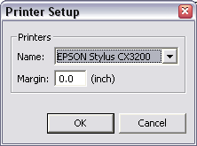
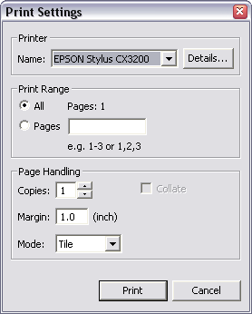

Printing is an important feature for a modelling tool, as many users
will want to produce paper copies of the diagrams. RMBench supports this requirement in
two ways:
during design, you can switch on the display of a page outline for each diagram. The outline will show the extent of the printable page (depending on the selected printer). This serves as printing preview and allows the user to place figures within page boundaries for better printing results
we provide a specialised printer dialog that adds all the usual features expected in an industrial-strength application
Note that currently (as of version 3.1) the Eclipse print support is
not implemented on all platforms. In particular, on Linux/GTK systems,
you
will find the print item in
the file menu, and the
print-related menu items in the Diagram
menu, disabled. As we depend on the Eclipse engine for the grunt work,
we cannot get around this restriction. Linux/GTK users should instead
consider the export facilities that will create file formats printable
through other applications
You can switch on the page outline by checking the Page Outline item in the Diagram
menu. When you do this for the first time, you will see the Printer
Setup dialog

As the printable page size depends on the printer in use, you have
to choose the printer and the margin settings for page outline
computation. These settings will be saved with the current diagram for
the duration of the user session, and can be changed at any time using
the Printer Setup item in the
Diagram menu.
Note that settings made in this dialog only serve the purpose of
computing the page outline. When you later print the diagram, you will
again be able to set these same properties, along with several other
values not related to page outline. Needles to say that if you change
these settings during printing, the results will not be the same as
presented in the page outline.
When you choose the Print
item from the File menu while
a RMBench diagram is active, you will see the
Printer Settings dialog

This dialog provides all the usual settings for a print dialog. You
can revise your choice of the target printer and the margin. Note that
if you use these facilities, the print results may deviate from the
page outline displayed in the diagram.
The Print Settings dialog
also provides the following Mode
options